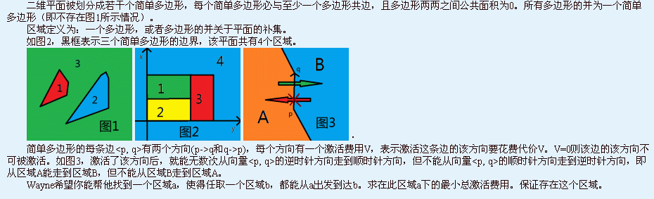
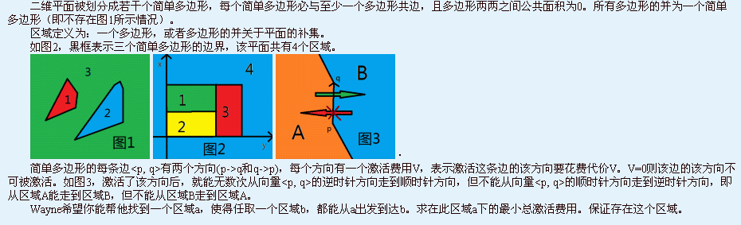
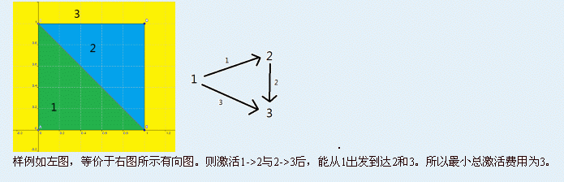

| F.A.Qs | Home | Discuss | ProblemSet | Status | Ranklist | Contest | 入门OJ | ModifyUser Xeonacid | Logout | 捐赠本站 |
|---|
| F.A.Qs | Home | Discuss | ProblemSet | Status | Ranklist | Contest | 入门OJ | ModifyUser Xeonacid | Logout | 捐赠本站 |
|---|

第一行两个整数n和m，表示点与线段的数目。
接下来n行，每行两个整数x和y，表示第i个点的坐标，点从1到n编号。
接下来m行，每行四个整数p,q,V1和V2，表示存在一条从第p个点连向第q个点的线段，激活p->q这个方向的费用为V1，另一个方向费用为V2。
保证若两条线段相交，则交点是它们的公共端点。
输出一行一个正整数，表示最小总激活费用。

对于100%的数据，n≤3000，区域数不超过1000，点坐标绝对值不超过1W，每条边激活费用不超过100。